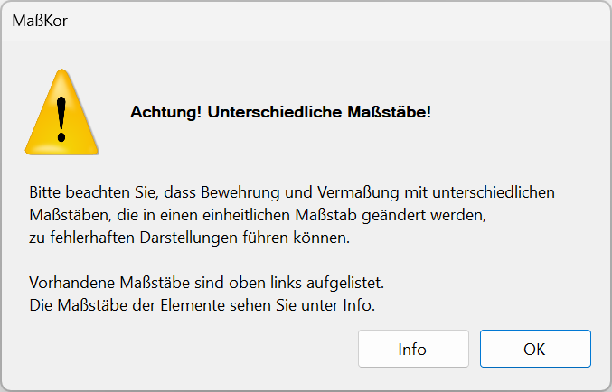
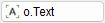
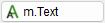
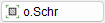

")

Mit dieser Funktion ändern Sie den Maßstab einzelner oder mehrerer Zeichenelemente. Informationen zu den in der Zeichnung verwendeten Maßstäben und den zugehörigen Elementen erhalten Sie über die Schaltfläche Info im Funktionsbereich.
Vorbemerkungen
·Wird der Maßstab eines Elements geändert, muss der betroffene Maßstabsbereich neu definiert werden.
·Liegen nicht alle Punkte einer Maßkette im Rahmen, erscheint ein Warnfenster.
·DXF-Dateien können nur in einen Maßstab umgewandelt werden. Die Linien behalten ihre alten Längen, so dass Linien in Schnitten durch eine falsche Maßstabszugehörigkeit falsch gemessen werden. Um diesen Linien den gewünschten Maßstab zuzuweisen, zeichnen Sie zunächst eine Linie im gewünschten Maßstab. Wählen Sie die Linie und die zu korrigierenden Elemente aus und geben Sie für den alten und neuen Maßstab den neuen Wert ein.
·Sind für die Maßstabsänderung benötigte Folien ausgeblendet, erscheint ein Hinweis. Schalten Sie sie bei Bedarf im Folienmanager ein. » Folienmanager
Maßstab ausgewählter Elemente ändern
Sie können für die Maßstabsänderung zunächst beliebige Elemente auswählen. Haben diese unterschiedliche Maßstäbe, müssen Sie die Auswahl auf einen der vorhandenen Ausgangsmaßstäbe beschränken und die Aktion für die verbliebenen Elemente wiederholen.
1.Elemente wählen
§Ziehen Sie einen Rahmen durch das Anklicken von zwei Punkten um die Zeichenelemente oder klicken Sie einzelne Elemente an. [1.Punkt/Element]; [2.Punkt].
-Die Elemente werden markiert.
-Sie können beliebig viele Rahmen aufziehen. Um Elemente wieder abzuwählen, klicken Sie im unteren Funktionsbereich auf Entfer und ziehen Sie einen Rahmen um die entsprechende Teilzeichnung. Wechseln Sie nach dem Abwählen wieder zurück zur Funktion Hinzuf, um ggf. weitere Elemente hinzuzufügen. Wenn Sie einzelne Elemente abwählen möchten, halten Sie die Umschalt-Taste (Shift) gedrückt und klicken die Elemente nacheinander an.
-Über die Schaltfläche Info im Funktionsbereich können Sie sich jederzeit den Maßstab der markierten Elemente anzeigen lassen. (Siehe: Maßstabsinfo (Dialog))
§Bestätigen Sie die Auswahl mit Rechtsklick.
Wenn die selektierten Elemente alle denselben Maßstab haben, können Sie sofort den gewünschten Maßstab eingeben. [Neuer Maßstab].
Unterschiedliche Maßstäbe in der Auswahl
§Sind Elemente mit unterschiedlichen Maßstäben in der Auswahl enthalten, werden Sie in einer Meldung darauf hingewiesen.
 |
§Führen Sie einen der folgenden Schritte aus:
a)Um fortzufahren, bestätigen Sie die Meldung mit OK. Anschließend können Sie den Maßstab wählen, der geändert wendet soll.
b)Um die Maßstäbe der ausgewählten Zeichenelemente zu prüfen, klicken Sie in der Meldung auf die Schaltfläche Info. Öffnet den Dialog Maßstabsinfo. Wenn Sie die Maßstäbe geprüft haben, können Sie im nächsten Schritt den Maßstab wählen, der geändert soll. Schließen Sie den Dialog mit OK. Bestätigen Sie den Hinweis mit OK.
§Wählen Sie unter der Abfrage [Alter Maßstab] den Maßstab, in dem die Hauptzeichnung erstellt ist, und bestätigen Sie mit Rechtsklick.
Änderungen an den anderen, in der Auswahl angezeigten Maßstäben müssen mit einem weiteren Durchlauf bearbeitet werden.
2.Neuen Maßstab wählen
§Wählen Sie unter [Neuer Maßstab] eine Angabe oder geben Sie den gewünschten Maßstab ein.
§Wählen Sie den Modus:
Zeichnet die gewählten Elemente entsprechend dem neuen Maßstab. |
|
Die Elementgröße wird beibehalten, der Maßstab wird geändert. Achtung: Die Darstellung entspricht gegebenenfalls nicht mehr dem tatsächlichen Maßstab, dieser sollte dann in der Zeichnung angegeben werden. Verwenden Sie diese Option z. B., um nach dem Import einer DXF- oder PDF-Datei bestimmten Elementen den der Größe entsprechenden Maßstab zuzuweisen. |
§Wählen Sie mit den Optionen im Funktionsbereich, wie Zeichenelemente angepasst werden sollen (nur im Modus ändern verfügbar):
 |
Textelemente werden nicht geändert. |
 |
Textelemente werden dem Maßstab entsprechend angepasst. |
 |
Die Schraffur wird anhand der ursprünglichen Einstellungen neu generiert. Der Schraffurfaktor bleibt erhalten. |
Der Schraffurfaktor wird dem Maßstab entsprechend neu berechnet. Beispielsweise wird aus dem Schraffurfaktor = 0,5 im Maßstab 1 : 100 bei der Änderung in den Maßstab 1 : 50 der neue Faktor = 1. |
|
Die Maßkette wird anhand der ursprünglichen ID-Einstellungen neu generiert. |
|
Die Maßkettenlinien werden dem Maßstab entsprechend angepasst. Ob auch Maßzahlen angepasst werden, hängt von der Einstellung o.Text oder m.Text ab. |
§Bestätigen Sie den neuen Maßstab und die Größenanpassung durch Rechtsklick oder mit der Eingabetaste.
Die gewählten Elemente hängen mit der gewünschten Größenanpassung am Cursor. Die Änderungen an Schraffuren und Maßketten, die mit o.Schr und o.Maßk generiert werden, sind erst nach dem Absetzen sichtbar.
3.Elemente absetzen
§Bestätigen Sie die ursprüngliche Position (alte Lage) mit der Eingabetaste oder mit Rechtsklick oder setzen Sie den Rahmen per Mausklick an der gewünschten Stelle ab. [Rechteck verschieben].
Wenn Sie die Elemente mit angepasster Größe an der ursprünglichen Stelle absetzen, wird die linke untere Ecke der Elementgruppe als Referenzpunkt verwendet.
Sie können sofort weitere Maßstäbe ändern.
Siehe auch: